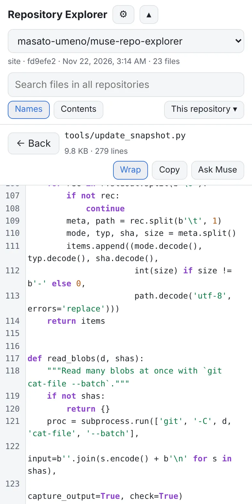
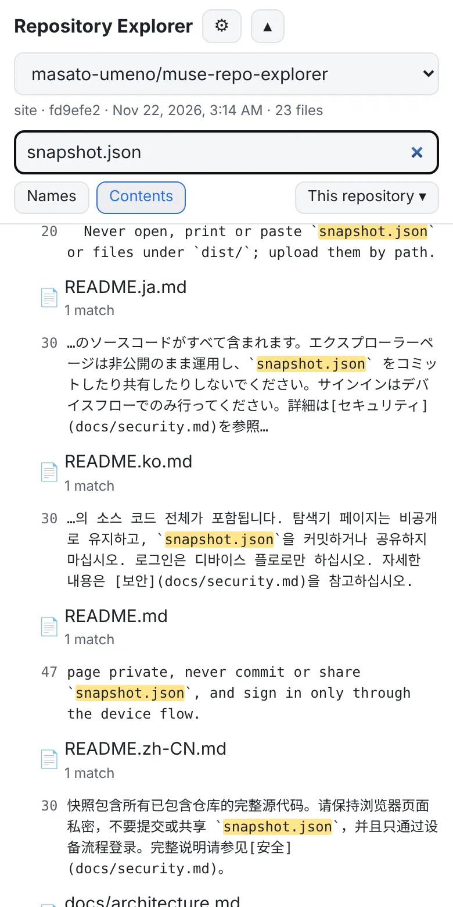
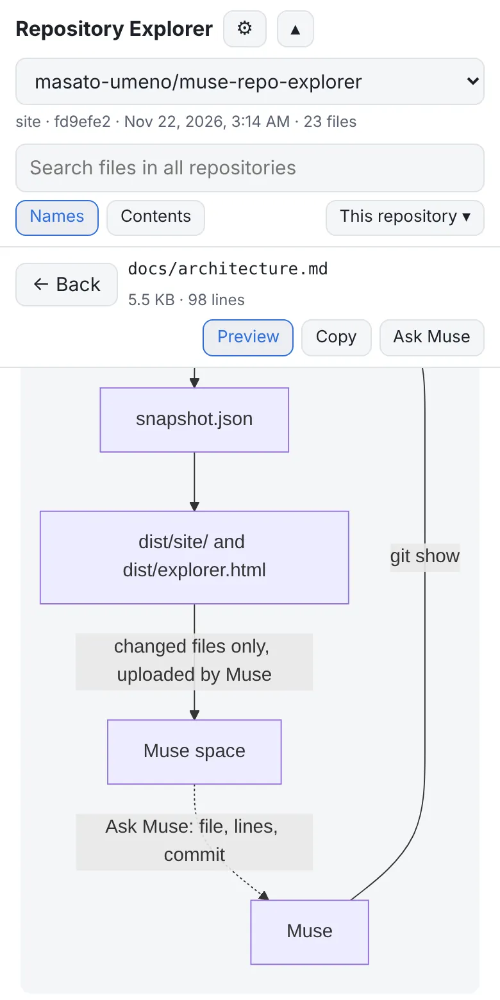

Your code, in your pocket. Muse, on any line.
muse-repo-explorer keeps your GitHub repositories in Muse, your personal AI agent, and turns them into a private code browser you open on your phone. When something needs explaining, send Muse the exact lines.
Set it up by sending this one line to Muse:
Set up muse-repo-explorer for me by following https://github.com/masato-umeno/muse-repo-explorer/blob/main/MUSE_SETUP.md (keep replying in the language we normally use)
The line is in English for everyone. Muse keeps replying in your language, and sending it again later updates everything to the latest version.
Try the live demoA live demo. It browses this project's own repository, exactly as your space would browse yours.
What the space does
Everything is designed for a phone: one hand, a narrow screen, and a few minutes between other things.

Read code comfortably on a phone
Choose a repository, open folders, and read with line numbers and syntax colours. Long lines wrap so you never scroll sideways, and the header folds away when you need the room.

Search names or the text inside files
Search one repository, all of them, or the ones you pick. Results show the matching lines; tap one to open the file at that line.

Documents read like documents
Markdown opens formatted, with tables, task lists and links that move between files. Mermaid diagrams are drawn in place.

Ask Muse about the exact lines
Tap line numbers to choose a range, check it, add your question and send it to Muse. The message names the file, lines and commit, so Muse reads them from its own copy. Nothing needs to be pasted.
From one line to a working space
Muse does the work. The tool tells it what to do at each point, so the steps are the same for everyone.
Send the line
Muse fetches the tool and follows it one step at a time.
Approve the sign-in
Muse shows a one-time GitHub code. You approve it in your browser; no password or token enters the chat.
Choose repositories
Pick the ones to include. With none at hand, this project can serve as a sample.
Open your space
Muse creates a private space. Send the same line later to refresh it or to move to a new version.
Light on tokens
- Muse reads code from local files and searches before it reads.
- The page is ready-made; Muse uploads it instead of writing it.
- Opening the space loads only the file list; each repository loads when you open it.
- Refreshing uploads only what changed, and questions point to lines instead of pasting them.
Private by design
- The space stays private. Never create a public link for it.
- Only committed content is included; symbolic links and files you exclude stay out.
- The page makes no requests to other sites.
- Sign-in uses GitHub's device flow, and credentials stay with the GitHub CLI.